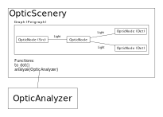

Introduction
This book represents the project documentation of OPOSSUM (OPen Source Optics Simulation System and Unified Modeller). The goal of this project is the development of a common software platform for simulating various aspects of optical systems in a holistic approach. It should be particularly useful for simulating and designing large-size, high-energy / intensity laser systems.
While there are a plethora of, mostly commercial, simulation / calculation tools available, most of them only address specific aspects of an optical system. For example, there are tools for pure geometric optics (raytracing), the simulation of non-linear effects in materials, wavefront propagation, parasitic lasing, diffuse illumination / straylight simulation etc... Modern laser systems need to take all these aspects into account which requires a repeated change of the tools and / or remodeling the optical system. This project is an approach to unifying this design workflow.
This project is a task within the THRILL project. The THRILL acronym stands for Technology for High-Repetition-rate Intense Laser Laboratories and is a project funded by the European Union.
Within the THRILL project, this task (3.4) has the title "supporting calculations for system design" and is led by GSI. The task description from the proposal is as follows:
[...] To strengthen the design decisions and later benchmark the system performance, the use of theoretical modelling is of vital importance. It exists a number of simulation tools for certain aspects of the laser chain (broadband generation, nonlinear frequency conversion and amplification, laser amplification, dispersion management, wavefront propagation, calculation of parasitic lasing, etc.) distributed among the project partners (GSI, FZU/ELI-BL, HZDR, CNRS-LULI) and in the wider community. In this task, we will gather calculations with the aim to make them accessible to the partners as well as to the wider community. For this purpose a common platform for input and output formats possibly with suitable interfaces will be developed. [...]
The project has a funding period of four years. The more specific goals and the project structure will be discussed in the following.
Note: This documentation will most probably never be a finished document but continuously extended and modified with the progression of the project.
Project Goals
Before defining the project goals, let us first look at the current situation while designing laser systems.
Current Issues
As stated in the introduction, the design of complex high-energy / intensity laser systems requires a detailed simulation of optical (and of course mechanical) effects and aspects. Often, these aspects have to be simultaneously taken into account while optimizing a system design. Different aspects might even stand against each other, such that optimizing (e.g. maximizing/ minimizing) one effect degrades the performance of other system parameters. So, a holistic approach would be desirable.
In the past, many tools were developed, often addressing very particular optical effects at several companies and research institutes. Often these tools are only used at the institutions which developed the software and even there only used by one or two people (e.g. in the frame of a master or PhD thesis). This of course sometimes leads to the situation that different institutes repeat the work and "reinvent the wheel". Hence, a common set of tools accompanied by proper knowledge exchange would significantly reduce this inefficiency.
Besides the solutions for modelling particular aspects of optical systems, there are many more general-purpose tools on the market which are unfortunately commercial, closed-source solutions. Each software has its own underlying design strategy. Furthermore, many of these tools (e.g. ZEMAX, OSLO, etc.) are designed for simulating more "traditional" optical systems such as camera objectives or illumination setups. In contrast, laser (chain) systems often demand different features which are not always fully supported (or easy to model) by these software packages.
The usage of different tools during the design phase often requires repeatedly modelling the optical system in the particular software and providing a bunch of input parameters. A common platform would allow for modelling the desired system once and analysing it with the above-mentioned tools and providing the input data in the particular format.
Goals
Based on the current situation discussed above the project tries to address the following goals:
- Improve the knowledge exchange about already existing software to model particular aspects of optical systems.
- Conception of a general system for describing optical systems. This concept would also be helpful as a base for open-science / open-data efforts serving as a metadata standard.
- Development of a software platform / framework with the goal to provide clear interfaces (e.g. API or file-based) for the interoperation of the different tools.
- (Depending on time constraints), direct implementation of modules within the above framework instead of external interfaces (e.g. geometric optics / raytracing).
- (Depending on time constraints), development of intuitive GUI for easy modelling of optical systems.
Project plan
For achieving the project goals, the following activities are planned:
- Survey of the optical aspects the different research groups are interested in while designing laser systems. This would later be the base for the design of a data model structure and should ensure that most (if not all) of the system properties can be mapped.
- Survey of existing tools used in the different institutes. The software packages might be collected at a central place (if publically available).
- Analysis of the existing tools and the identification of interoperation possibilities
- Development of a general data structure for modelling optical systems based on the result of the first point.
- Implementation of a framework using this data structure
- Implementation of adapters to the already existing tools
- Direct development / implementation of (simple) modules fullfilling common aspects of optical systems (such as geometric optical)
- Development of GUI
Up to now, the points 4, 5 & 6 will be the main activity within the project and will make up the majority of the work to be done.
The implementation of the framework can also be separated in a step-by-step approach:
- Implementation of basic data structures (OpticScenery, OpticNode, etc..)
- Implementation of very basic ideal nodes (Maybe only "source", "detector", "propagation", "ideal beam splitter", "ideal filter")
- Above simple nodes would allow a first very simple analysis: energy transmission through a tree-like system. This would allow for first checks of the data structures and general design.
Existing Software
The following software already exists in the field of optical simulation and should be considered while designing the model concept.
Free / Open Source
| Software | Institute | Contact person | Language | comment |
|---|---|---|---|---|
| HASEonGPU | HZDR | Daniel Albach | C/C++ | parasitic lasing in high-power laser amplifiers |
| SHG | GSI | Marcus Malki | Python | second harmonic generation |
| SNLO | free | - | Binary (APL or matlab) | three-wave mixing |
| LightPipes | free | Leonard Doyle | Python / C++ | Beam propagation Toolbox |
| Sisyphos | FFI (Norway) | Gunnar Arisholm | Python / C | parametric amplifiers, spectral broadening, postcompression |
| GoLP | Goncalo Figuera | ? | spatio-temporal coupling | |
| LULI | ? | |||
| Rochester | ? |
Commercial
| Software | Institute | Contact person | Language | comment |
|---|---|---|---|---|
| GLAD | HZDR | Mathias Siebold | Matlab | universal modelling of laser amplifier chains |
| ZEMAX | commercial | Udo Eisenbarth | Binary | general geometric optics simulation |
| Commod Pro | commercial | D. Kramer | Binary | universal modelling of laser amplifier chains |
| Miro | LULI | - | universal modelling of laser amplifier chains |
Modelling optical systems
In this chapter we want to develop a general model for describing optical systems. This taks represents a major part of the project. A careful planning of this model is a crucial point, since wrong decisions in the (data) model could lead to severe shortcomings in later real-world problems to be solved. Hence, this also directly influences the acceptance of this work in the community. A model not being used is of course of very little use...
In general, optical systems consist of light sources which provide a more or less complex light field (time invariant or time dependent) and optical components, which modify this light field. Furthermore, there are light sinks such as simple beam dumps, targets or detectors. These are the elements which produce a "result" (e.g. measurable signal) and thus make a system "productive". The components - light sources (such as a laser) or optical elements (e.g. Faraday isolators) - might itself consist of sub components. In principle, these components again might consist of sub components with an unlimited nesting level.
Of course for a full system description, it would be sufficient to simply place the mechanical model of the optical components in a 3D space along with their particular orientation. For certain tasks, such as illumination or straylight analysis this would be an appropriate approach (and thus will be supported by our model). However, typical systems mostly cast optical rays or light fields in a directed way from one component to the next one. Optical systems can thus be rather decribed in network- or most often in tree-like structures.
Directed graphs as primary model structure
For the above mentioned networks of optical components, well-established structures could be used which already exist for a long time: directed graphs. A directed graph consists of so-called nodes and edges. For our purposes nodes respresent the optical components, while edges represent the information about the light (energy, wavelength, wavefront, nearfield distribution, etc.) to be handed from one node to the next one. Note, that in this picture, a free space propagation is also represented by a node.
A node has one or more ports where edges can be connected to. We thereby strictly distinguish between incoming and outgoing ports. A node with no input ports represents a light source. Nodes with no output ports are detectors. A simple (ideal) propagation node would have one input and one output port. Furthermpre, an ideal beam splitter has one input port and two or more output ports. More realistic components such as a real lens could also have more than one input and output ports e.g for simulating ghost reflections from lens surfaces.
There are different node types representing various optical components (ideal / real lenses, beam splitters, waveplates, etc.). Each node has, depending on its node type, various attributes, which describe component parameters such as length (e.g. for propagation nodes), focal length (ideal lenses), radii of curvature (real lenses) etc. In addition, there are group nodes which represent a set of other nodes. These nodes are also arranged in a directed graph. In this case non-conected ports form the "externally visible" ports of the group. Of course, the nodes of such a group itself can be group nodes thus allowing for setting up hierarchic, nested structures.
Loops for modelling resonators
A directed graph can also model optical resonators by forming loops. This works well for ring resonators but might lead to problems for linear resonators. Let us assume we have the most simple linear cavity consisting of a mirror node, a propagation node, and a second mirror node. Forming a loop here might introduce some ambiguities. While the intented loop would consist of all nodes, a simple "reverse" edge from the second mirror back to the propagation node and then further to the first mirror would actually form three loops: The intended large loop from mirror to mirror ans two smaller loops directly between each mirror and the propagation node (which does not make sense in a real world setup). This becomes even worse for more complex resonators containing additional components (lenses, amplifier rods, etc.).
One way out might be the introduction of reference nodes. A referenece node, as the name says, only contains a reference to another node. So this node exactly behaves like the node it references. This way, a linear resonator could be translated into a corresponding ring resonator.
Note: Strictly speaking, light in a ring resonator can propagate in both directions (if not suppressed by optical components). Since we have a directed graph, only one direction can be modelled so far. Solutions need to be further investigated.
Intermediate data format
While being not yet clear at this stage how to fully describe an optical system using the described graph system we would propose to use simple text files for storing optical models. For this the YAML format seems to be appropriate since it is more or less human readable and allows for comments (in contrast to the JSON format). Furthermore, the standard rust serialization library serde already supports this format. As the software progresses, new features will be added or changed. For this, a version system should be considered stright from the beginning.
A graphical representation could be the usage of the graphviz software package. While the proposed rust graph library petgraph already provides some basic export to the graphviz .dot files this needs to be extended.
On the long run a graphical (drag & drop) editor would of course the favorable option.
Nodes
Nodes form the building blocks of the optical model. Maybe it makes sense to introduce different general node types:
-
Basic node
This node type represents the lowest level modeling optical components. This category includes all ideal components such as "ideal lens", "ideal filter", "ideal mirror", etc... Furthermore, it can represent an interface between two materials such as a flat or curved surface.
-
Propagation node
This might also fall in the first category?. This node represents propagation through a given material. This includes free-space propagation (eg. in air or vacuum).
-
Sequential group node
A sequential group node contains a nested directed graph of basic, propagation or other group nodes. A real lens could be a group node consisting of a (curved) input surface node, a propagation node (inside of the lens), and an exit surface.
-
Non-sequential group node
A non-sequential group contains other nodes (which might still be set up as a graph but do not use the structure) which are simply placed in 3D space. This could be used for simulating flashlamp-pumped systems which need the illumination of a laser rod to be simulated. One has to think about the definition of input and output ports (see later) for these systems.
-
Reference node
This node type represents a link to another node. It could be necessary to use reference nodes while modeling loops such as resonators.
Note: It might be necessary to propagate through a node in a reverse direction (e.g. for back reflection / ghost-focus analysis). Hence each node should have a "reverse" function. In the case of a propagation node, this would be identical. For a basic node, it might change the sign of some properties such as the radius of curvature. For group nodes, the underlying order of sub-nodes has to be reversed. The reference node only needs a qualifier to denote whether the propagation is reversed or not.
Ports
Ports are the connector points between nodes and can be connected by edges. Ports are strictly distinguished as "input_1" and "output_1" ports. Output ports can only be connected to input ports of another node and vice versa while it is forbidden to connect two input or two output ports. In addition, output ports do not need to be connected to other nodes. During analysis, any result will be simply discarded.
Ports have a specific name in order to distinguish them. For example, a beamsplitter cube might have one input port (e.g. named "input_1") and two output ports named "output_1" and "transmitted" for the two outgoing beams.
Nodes with output ports only form the optical sources while nodes containing (usually only one) input source will be called detectors. In most cases, a simulation of the model traverses the graph from all sources to a detector node using all possible paths (see Analyzers).
Attributes
Each node can have a set of attributes that represent its specific properties. For example, a propagation node contains a propagation length and a material. An ideal lens contains the focal length as an attribute. Each attribute has a name and a strictly defined data type. Attributes may have default values or are completely optional.
In addition, nodes have a set of attributes that are common to all of them. However, all of these attributes are optional (e.g. can be "empty").
Common attributes for all nodes
-
Node type
This defines node model such as basic node types (propagation, ideal lens, ideal filter etc..) as well as the type sequential / non-sequential group node. Maybe this is not strictly an attribute but a given rust struct type.
-
Node name
While not strictly necessary it is strongly recommended to assign a name to a node for easier identification. In principle, different nodes can have the same name but this might cause much confusion. Internally the model uses unique IDs for each node in order to distinguish them but these IDs are only internally handled.
-
Component Database ID (optional)
If set, this could be a reference to a (local) component database. It should be considered to also include the database information while exporting the model to a file. If the ID is not set, it would be a "manually configured" component.
-
Material
This is strictly necessary only for propagation nodes... Each optical element consists of a given material. These are mostly different glass materials but could also be metals (i.e. for mirrors) or other substances. Even for free-space propagation nodes a material must be given. This might often be "air" or "vacuum". Since materials have a plethora of attributes and will be used by different nodes within a model, the material will be a reference pointing to a materials database.
Note: For interoperability, it might not be always a good idea to only have the material properties in a (local) database. If the model data is given to another user, this data might not be found in his (also local) database. Hence it should be possible to attach the actual material data to the model during export. The alternative would be to have a global database...
-
3D location
Each node can have information about its location in 3D space determined as XYZ coordinates with respect to a given global origin. The anchor position of the node depends on the specific node type. This attribute together with the orientation information (see next point) can be used for doing a 3D ray-trace analysis or simply for visualization.
-
3D orientation
Besides the location (see previous point) an optical component has a given orientation in 3D space. This orientation is defined by angles around the axes of the global coordinate system.
-
Aperture shape
Each real-world optical component has a limited physical / mechanical size which also determines the area of incoming light it can handle. Incoming beams farther away from the optical axis than the component's extent will simply be lost during the analysis. Hence, each node can define an aperture with different shapes (mostly circular or rectangular). The exact handling of the aperture is defined by the specific node. Without a given aperture many nodes assume an infinitely large component such that all beams are always caught.
Note: It might be necessary to extend this to one aperture per input port for asymmetric parts.
-
3D mechanical model
For non-sequential analysis (e.g. ray tracing), a 3D geometric model is necessary. This could be provided as static 3D files (OBJ, STL, etc.) or programmatically derived. For example, the model of a spherical lens could be directly calculated.
-
Surface definitions
For both, sequential and non-sequential analysis, surface properties such as coating or roughness which define the way light will be reflected or propagated through should be defined. This could also be modeled using basic nodes
Analysis interface
As discussed, the actual calculation is performed by the nodes. The presented framework will only make sure that all necessary input data will be provided. For this, each node has to implement an Analysis function with light data from the incoming edges as parameters. This function can now either directly perform a calculation or call specific external modules (such as C/C++ library code or a Python script).
Source
Properties
light data
: Definition of the light field of the source. See here for more details.
light data iso
: Isometry of the light data field. By defining this isometry it is possible to move a point source with respect to the anchor point of the source.
alignment wavelength
: This property defines the wavelength if the single light ray which is used during alignment of the nodes.
Dummy
Beam splitter
Energy meter
Node group
Ideal filter
Reflective grating
Reference node
Spherical lens
Cylindric lens
Spectrometer
Spot diagram
Wavefront monitor
Paraxial surface
Fluence detector
Wedge
Mirror
Parabolic mirror
Edges
Edges connect the nodes in the model graph. Edges contain the "light data" which needs to be exchanged between the nodes if analyzed by a sequential analyzer. The content of an edge depends on the type of analysis performed. For geometric optics, it contains an array of ray vectors (position & angle) together with a wavelength and an intensity. For wavefront propagation,, it might contain a 2D complex array representing the nearfield distribution as well as the local phase.
Possible types of data:
-
Energy / Power flow
For simple calculation of light transmission through an optical network. This would also be a starting point for the software development. An extension could be an array of energies / powers depending on the wavelength (=spectrum). This could also propagate through the network and possibly be transformed using non-linear optics (frequency doubling)
-
Geometric optics propagation
In this case an array of 2D vectors representing the vertical distance from an optical axis and its angle to it. This vector might also be extended by an energy, or a wavelength. Later on, it must be extended by the horizontal information. Furthermore, polarization information could be added using Jones matrices.
-
Wavefront optics propagation
For this kind of simulation, a 2D complex matrix is necessary which simulates the nearfield intensity distribution and the local phase of the wavefront. In addition, would be an array of these matrices depending on the wavelength for simulating polychromatic light. Furthermore, similar to the case of geometric optics, a 2D array of local polarization information could be handled (e.g. simulation of local birefringence effects etc.).
-
Time dependency
It is still not clear how to handle time-dependent phenomena...
Of course,, the above information can be stored simultaneously in an edge and transported through the graph.
Using optical materials
As discussed, almost all optical components (except ideal ones) consist of one or more materials. Often for simulations, several material parameters must be known. Since the same material data is shared between different nodes, an infrastructure for handling material parameters is needed. A simple approach could be a text file.
Preferable however is a database that would also allow for shared access between different users from a central server. A common materials database would thus reduce the effort of adding new materials. A draft of the database layout could be as follows:

This structure allows for an arbitrary number of material parameters to be added with a strictly defined data format. Let's describe the structure in detail:
Table: materials
This is the central table storing the materials with their name and a reference to a material type (see next section). The actual data table (materialdata) refers to this table for assigning a property(value) to a certain material.
Table: materialtypes
This is a simple table storing different material types such as "glass", "metal", "gas", "crystal" etc. The purpose is simply to provide a filter to all materials while browsing a (possible) long list of materials. Each material refers to an entry of this table. This means the material belongs to a certain material type.
Table: properties
This table defines the property names such as "refractive index" or "manufacturer" together with a description field. These properties are connected with one or more data types (see next section) which represent the property value type.
Table: datatypes
The data type defines the way the value of a property is represented. This could be a value such as "numeric", "string", "2dData" etc. This information defines how the actual data fields (defined in materialdata) have to be interpreted or parsed.
Table: datasources
This table stores information about where the data was taken from (website, info from the manufacturer, own measurement, etc...)
Table: proptypes
This is the connecting table for relating a given property to a set of data types.
Table: materialdata
This table stores the actual material properties.
Materialdb software
As a first project, the materialdb software has been developed. This software consists of a backend and a frontend part.
The backend is written in Rust using the seaorm package for database handling as well as the rocket web framework for the development of a web API. Furthermore, this crate also contains basic functions for accessing the database (read-only so far) from the node system to be developed. For viewing / editing the database a frontend package written in Angular was developed.
Physical Processes, Subsystems and Components
Modern laser systems are composed of a large number of optical subsystems and individual optical components. For a holistic description of such a system, all these optical components and the structures that are built from these must be modeled. Furthermore, a numerous amount of physical effects/processes must be included to create a realistic view of the full system.
In the following, a, probably not complete, list of relevant effects/processes, subsystems and components for high-intensity lasers will be compiled.
Physical Effects/Processes
Gain
Obviously, gain modeling of high-intensity lasers is indispensable to design either single amplifier modules or to get useful output predictions of the whole laser facility. Furthermore, spatially, temporally and spectrally dependent gain will alter the dynamics of the beam propagation and is needed for a full description of the laser system. Therefore, several gain models should be on hand for this:
- Gain as simple multiplicator
- Full rate-equation modeling
- 3-level, 4-level, quasi-three level
- Analytic approximations
- Saturation effects:
- Frantz-Nodvik equation
- Wavelength-dependent saturation: Homogeneous/Inhomogeneous broadening
- Absorption
- Spatial Hole Burning
- 3D, 2D, 1D descriptions
- Spatial/Temporal Mode support of the amplifier
Simultaneously, effects that may alter or limit the gain and output of an amplifier should be regarded, such as:
- Amplified Spontaneous Emission
- Parasitic Lasing
- Parametric Fluorescence
Second-order nonlinear effects
Second-order nonlinear effects include all processes that result from the response of the second-order susceptibility $\chi^{(2)}$:
- Second-Harmonic Generation (SHG)
- Sum-Frequency Generation (SFG)
- Difference-Frequency Generation (DFG)
- Optical Rectification (OR)
Furthermore, processes that utilize these processes shall be part of the description, such as:
- Optical Parametric Amplification (OPA)
- Optical Parametric Chirped-Pulse Amplification (OPCPA)
- Optical Parametric Generation/Oscillation (OPG/OPO)
- Spontaneous Parametric Down Conversion (SPDC, Parametric Fluorescence)
- Cascaded Mixing effects
- THz Generation
These effects are typically modeled by solving the nonlinear propagation equation with $\chi^{(2)}$ acting as the source term.
Third-order nonlinear effects
Similar to the second-order effects, third-order effects result from the response of the medium, described by the third-order nonlinear susceptibility $\chi^{(3)}$. This nonlinear response is responsible for a variety of effects:
- Kerr effect
- Self-Phase Modulation (SPM)
- Cross-Phase Modulation (XPM)
- Modulational Instability
- Self-focusing (Whole beam and small scale)
- Two-Photon Absorption
- Self-Steepening
- Four-Wave Mixing
- Third Harmonic Generation
- Parametric Amplification in fibers
- Cross-Polarized Wave Generation
- Self-Diffraction
- Optical Phase Conjugation
While the above-mentioned processes act quasi-instantaneous, delayed nonlinear responses of the medium are also relevant for the description of some processes. The most prominent effects here are:
- Stimulated Raman Scattering (SRS)
- Stimulated Brillouin Scattering (SBS)
Other Effects
Aside from processes that are related to the nonlinear susceptibility of the medium, various other processes exist which may alter the electric field during propagation/amplification. These include:
- Thermal Effects such as thermal lenses, thermally induced birefringence
- Electro-Optic Effects: Pockels Effect, Photorefraction
- Acousto-Optic Effects: Deflection or frequency shifts in, e.g., acousto-optic modulators
- Gain/Absorption saturation
Subsystems of modern laser facilities
Amplifiers
The most relevant subsystems to create high intensities are the amplifiers of the laser. In modern laser systems, the amplification follows the structure of the "Master-Oscillator Power Amplifier" (MOPA). This means that the amplifiers are linked in succession and the output of a previous amplifier is used as input for the next one. This allows the amplifier chain to be conveniently described by means of nodes, whereby the individual amplifier nodes themselves can be, but do not necessarily have to be, described using a node system. Nowadays, there are a large number of amplifier types that are implemented in modern laser systems. In the following, several amplifier types and their relevant pumping mechanisms are listed:
- Fiber-based amplifiers
- Continuous/pulsed laser diode pumping: Forward, backward, forward + backward
- Cavity-based amplifiers
- Short-Pulse Oscillators (CW pump: e.g. frequency-doubled Nd:YAG)
- Regenerative amplifiers (pulsed pumping: flash lamp, laser diode)
- Optical parametric oscillators (CW pumping or two coupled resonators)
- Thin-Disk amplifiers (same as regenerative amplifier but also CW laser-diode pumping for high repetition rate)
- Non-Cavity-based Multi-Pass Amplifiers
- Relay-imaged multi-pass (pulsed/cw laser diodes)
- Non-imaged multi-pass (pulsed/cw laser diodes)
- Innoslab Amplifiers (pulsed/cw laser diodes)
- Rod Amplifiers (Complex Flash-Lamp Pump geometries)
- Slab Amplifiers (Complex Flash-Lamp Pump geometries)
- Coherent Beam Combination (no pump)
- OPA/uOPA/OPCPA (from cw to narrowband long pulse, broadband long pulse or short pulse pump)
Beam Transport
As laser facilities consist of multiple, subsequent amplifier modules, beam transportation is necessary which is typically done via telescopes. Here, certain aspects are of relevance:
- Magnification
- Imaging of the beam: Relay-Imaging
- Aberrations
- Use for mode matching
- Use for diffractive Beam shaping
- Transmissive or reflective telescope
- Parabola usage
Stretching and Compression
To reach highest intensities, the concept of chirped-pulse amplification is typically used which requires temporally stretching the pulses and compressing them after amplification. While the use of gratings for the main stretching and compression modules have prevailed, other systems are nonetheless found in laser systems. Accordingly, various setups should be regarded:
- Grating stretcher
- Martinez setup (Unfolded with lenses)
- Martinez setup (Unfolded with mirrors)
- folded Martinez (Banks)
- Öffner setup
- Grating Compressor
- Four gratings
- Two gratings with a double pass
- Two gratings with single pass
- Prisms
- Grisms
- Chirped Fiber/Volume Bragg Gratings
- Dispersion-based Fiber Stretcher (long fiber)
- Chirped mirror setups
- Gires-Tournois Interferometer setups
Effects concerning stretching and compression process which should be included are:
- Calculation of the phase
- Misalignment sensitivity
- Contrast issues due to Spatiospectral coupling
Measurement devices
Every laser system relies on constantly doing measurements to observe the quality of the provided pulses/beams. Consequently, holistic simulation software should provide the outcome of the simulation either in a direct, "ideal" way or modulated as measured with a certain device. For example, a measured signal of a photodiode is a convolution of the real input signal with the response function of the diode. Such a response of a device may be specifically calculated for each type of device or even more specific for an exact rebuild of a given device. Below, a list of potential parameters of interest and a list of measurement devices is given.
- Parameters
- Energy
- Power
- Fluence
- Intensity
- Spectrum
- Spectral Phase
- Pulse duration
- Electric Field
- Beam size
- Wave front
- Temporal Contrast
- Spatial Contrast
- Measurement Devices
- Energy Meter
- Photo Diode
- Camera
- Shack-Hartmann Sensor
- Spectrometer
- FROG, SPIDER, Wizzler
- Autocorrelator, Cross-Correlator
- Shear Plate
- Interferometer setups
Optical Components
Every subsystem is composed of at least one or multiple optical components, which are the basis for the modeling of the whole laser system. Each component itself may be modeled separately and effective values may be used in its simulation node. Alternatively, the whole structure of the component may be modeled to get the most realistic output. For example, a more idealistic lens may contain information about its focal length only and a more thorough lens may use information such as the radius of curvature of all surfaces, its aperture and refractive index profile. In optical systems, a broad variety of different single optical components are used, which however may be classified into several groups:
- Lenses
- Spherical, Aspherical, Achromatic, Cylindrical,
- Fresnel, Axicon, GRIN, Powel Lens
- Microlens array
- Mirrors
- Flat, Curved
- Dielectric, Metalic
- Beamsplitter
- Polarizing, Spectral, Pellicle, Polka Dot
- Filter
- Spectral, Polarizing, Neutral density
- Dispersive Elements
- Prisms, gratings, Grisms, fiber gratings
- Nonlinear Crystals
- Uniaxial, Biaxial
- Laser Medium
- Fiber
- Phase plates
- Polarization Manipulation
- Pockels Cell, Faraday Rotator, Wave plates
- Apertures
- Pinholes, Serrated
Whether a fixed classification in group nodes is useful still has to be determined.
Model analysis
Once a model is set up by defining the nodes, assigning specific node parameters, and connecting the nodes with edges, the model is ready to be analyzed / simulated. As already discussed in the introduction, the model could be analyzed in very different ways. One might simulate the system using geometric optics. A very simple analysis might only calculate the power / energy flow through the network. Another analysis would be a full-size Fourier optics propagation. In addition, a 3D raytracing procedure could give insight into illumination or straylight scenarios.
Besides this "direct" simulation of the model, it is possible to simply export the model into a given format suitable for external simulation software (e.g. ZEMAX or GLAD).
The underlying type of analysis fundamentally influences how to work with the model. For an energy flow or geometric analysis the system has to traverse in a particular way through the network in order to stepwise calculate the light field within the edges of the model. In contrast, for a 3D ray-trace analysis, the edges do not play a role at all but the nodes have to be placed at given 3D coordinates and light rays from one or more defined source nodes will be cast into the scene and collected by detector nodes.
For this flexibility, there are several analyzers provided. Note that these analyzers do not necessarily perform any calculations themselves directly but might only be responsible for calling the analysis functions of the nodes. In the following, we want to further discuss the analysis modes.
Analyzers
An analyzer is a module that "orchestrates" an optics simulation. An analyzer defines, how the model will be treated. There are basically two types of analyzers: Sequential and Non-Sequential. A sequential analyzer traverses the graph in a defined manner and triggers the corresponding calculation defined inside the nodes. In contrast, the non-sequential analyzer does not actually make use of the graph structure (i.e. the relations between the nodes) but only uses the nodes and their corresponding attributes such as 3D coordinates or mechanical model data.
Note: The use of different analyzers might lead to "contradicting" models. For example, one can model a free-space propagation node between two other elements (e.g. two lenses). It can thus define a given geometric length as an attribute. On the other hand, the two lenses might have 3D coordinates with a different distance to each other than defined in the propagation node. In this case, the sequential analysis would simulate another model situation as the non-sequential analyzer...
Sequential Analyzer
A sequential analyzer uses the node relations defined by the edges of the model graph. It would traverse the graph from one or more sources to one or more detector nodes. While traversing, it calls the respective analysis functions of each node. The input data is taken from previously calculated light information stored in the input edges of a node. The node's analysis result will be stored on the output edges.
The analyzer is also responsible for deciding which nodes in a graph must be calculated at all. Sometimes the user is only interested in a part of the optical network and in this case, often not all nodes need to be calculated at all. Furthermore, modifications of the model often do not need a complete recalculation of the graph but use results from earlier simulation runs. Finally, the analyzer could also decide, which nodes do not directly depend on each other. In this case, nodes can be calculated in parallel thus saving time on multi-core CPU computers.
There might be different analyzers available such as:
- geometric analysis (Matrix optics)
- Gauss mode propagation (also matrix based, see LaserCalc)
- wavefront propagation (Fourier optics)
- simple calculation of energy / power
- ghost focus / back reflection analysis
- ...
For each analysis, the corresponding node attributes must be set. For example, a light source node has to define a set of rays with a given position and angle if a geometric analysis is performed. For wavefront propagation, a complex intensity / wavefront matrix must be defined.
Note: Also in this case the model might contain inconsistent values such as a wavefront that does not fit the set of rays defined. How do we deal with this?
Non-sequential Analyzer
A non-sequential analyzer does not make use of the edges for traversing the node network. This is the case for performing a free 3D raytracing analysis of an optical setup located in 3D space. Hence, for using this analyzer all nodes must have information of their location and orientation set by the respective attributes. Otherwise, these nodes are simply skipped in the simulation. One or more light source nodes are used to cast light rays into the scene. Detectors on the other hand can collect all incoming rays for further analysis. For ray casting, each node has to have a 3D mechanical representation and a (maybe default) surface definition.
Interfacing with external code
The presented project is set up as a simulation platform which means that it only provides the framework / infrastructure to perform complex simulations of optical systems. This can be done in different ways. Once an optical system is modeled as explained before it should basically contain all data necessary to run specific simulation codes. Besides that, the entire network can be exported to files compatible with other simulation systems. This is mostly of interest for closed-source (commercial) software packages such as ZEMAX or GLAD. Fortunately, these software packages have more or less human-readable project files which can be reverse-engineered with not too much effort.
For existing open-source software packages it is important to provide interfaces. So far, two codes could be used as proof-of-principle projects:
-
SHG software (GSI)
This software simulates the behavior of non-linear crystals for second-harmonic generation. This package is written in Python and could be integrated into an "SHG node". It should be investigated, how the interfacing could be performed. Some preliminary work has been done in the current "play project" opticplay. The external code was called from Rust using the PyO3 library.
-
HASEonGPU (HZDR)
This software package is written in C++ and works on graphic CPUs (using CUDA?). If this project provides an external library (DLL) it would be relatively easy to implement. This has to be investigated.
Software architecture
This chapter discusses the overall software structure of the OPOSSUM system.
In the first version, we want to concentrate on a framework providing the necessary entities (i.e. structs and traits) in order to model optical systems as previously described. This system would simply require a main function calling the necessary structs. For better debugging purposes, we should already implement an export system to the graphviz package (dot-files) for visualization of the graph structures.
In a further step, a command line tool should be developed to accept a data file containing the model. This requires a proper serialization / deserialization system to be implemented. For this, we would propose a very well-established standard crate serde which can then read and write data in various formats such as JSON or YAML.
For future extension steps, the possibilities of modular design should be investigated in detail. This approach helps to keep the basic framework simple and might improve the integration of external code contributions. Hence, the possibilities of a plugin architecture should be considered.
A topmost-level view could look like this:

OpticScenery
The OpticScenerystruct contains the entire model and possibly further metadata (e.g. such as a description field). It should also implement functions serialization / deserialization (which will be forwarded to the corresponding functions of the struct members) which allow for writing / reading an optical system to / from a storage medium.
In addition, it should implement the top-most function to export the graph to the graphwiz foramt for easy visualization. Last but not least it also conatins the top-level analyze function starting the acutal analysis process. The type of analysis has to be given here making use of the well-known strategy pattern.
OpticNode
OpticAnalyzer
Usage
Installation on Linux (Ubuntu)
For installing / compiling the software besides a rust development environment (see rustup) the following packages must be installed:
sudo apt install build-essential cmake libfontconfig1-dev
Then the software suite can be tested and installed.
cargo test
cargo build
Open questions & Ideas
The content of this page has moved to the issue board of the repository.
Useful resources
This is a list of programming and documentation resources in no particular order that might be interesting for the model and software development:
-
Software
- petgraph: Rust library for working with graph data structures.
- Graphviz: A software pacakge for visualization of graphs. The
petgraphcrate already has some basic support for it. - Raytracing example for Rust: Basic tutorial for programming a simple raytraces in rust.
- Goptical: GNU optical design library. A C++ library which could lead as an idea for simulating geometric optics.
- egui: Possible candidate for a rust GUI library.
- List of rendering libs: A list of rust crates for rendering. Do we need this?
- Fyrox: Possible candidate to an interactive 3D renderer....actually a game engine.
- uom: Rust crate for dealing with physical dimensions and units.
- Rust design patterns: Book of common rust desing patterns.
-
Physics